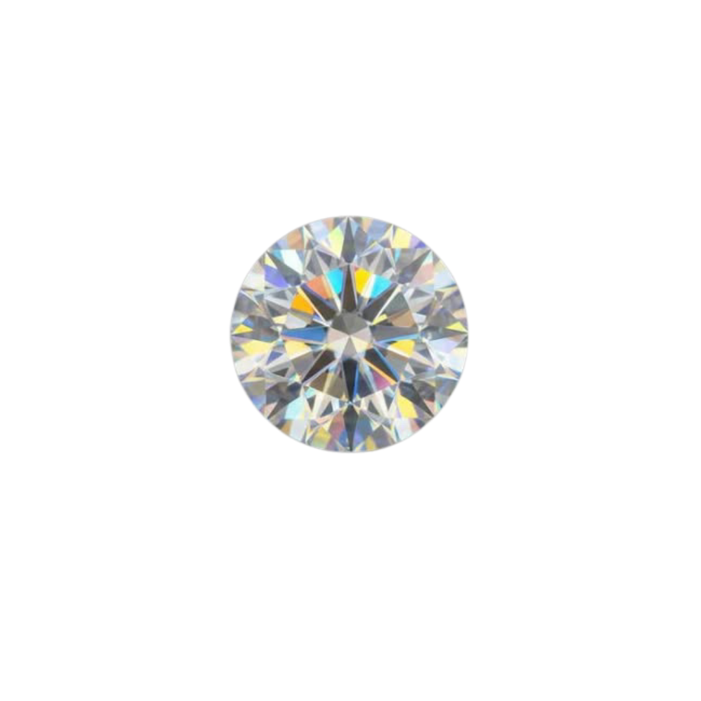
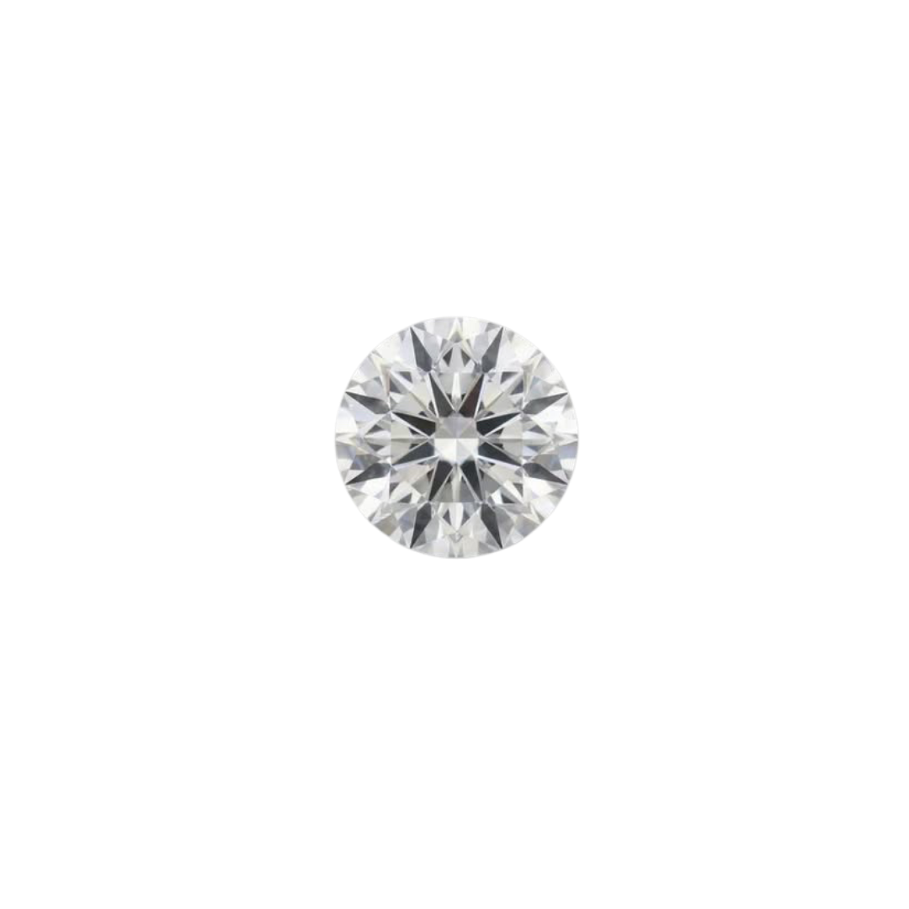
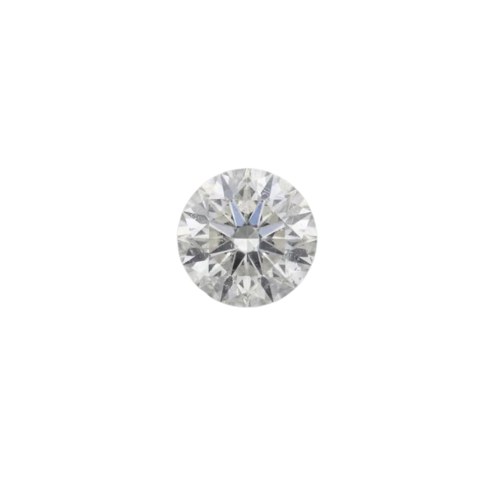
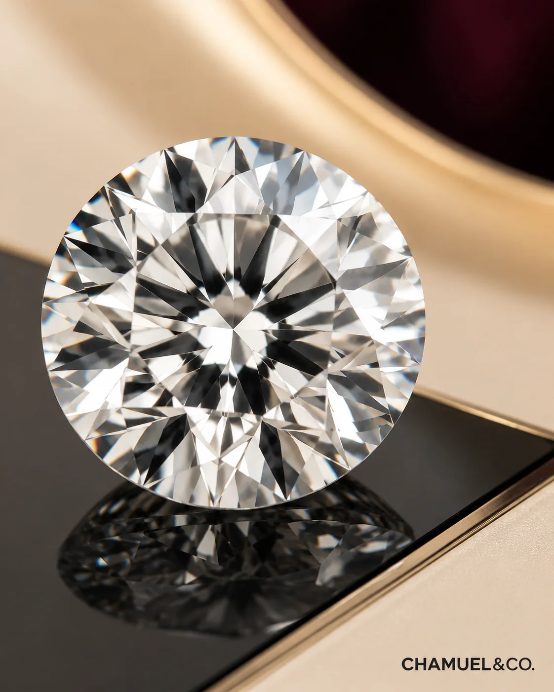
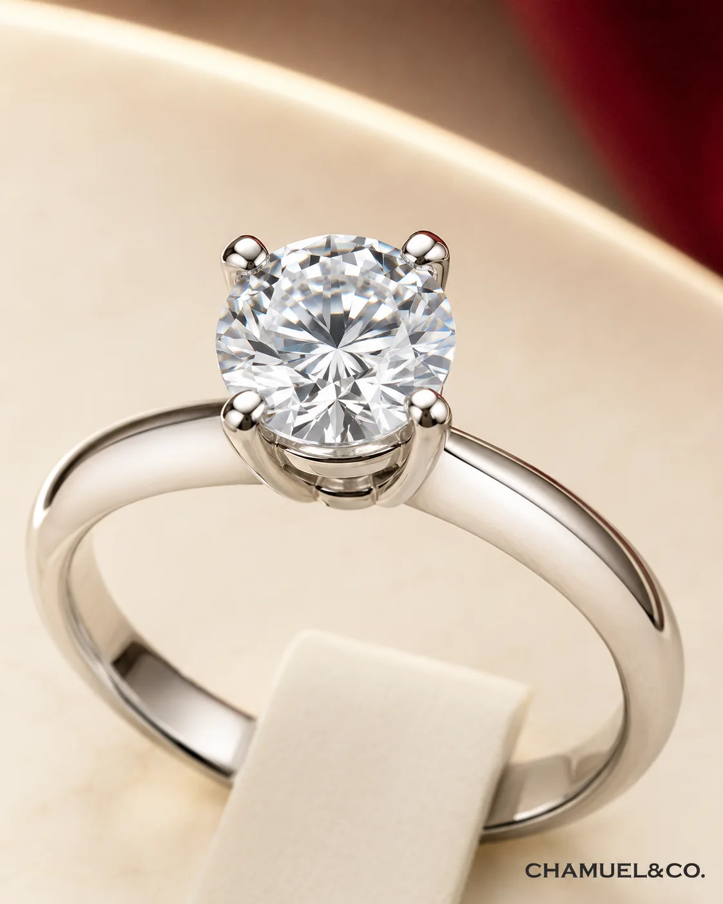
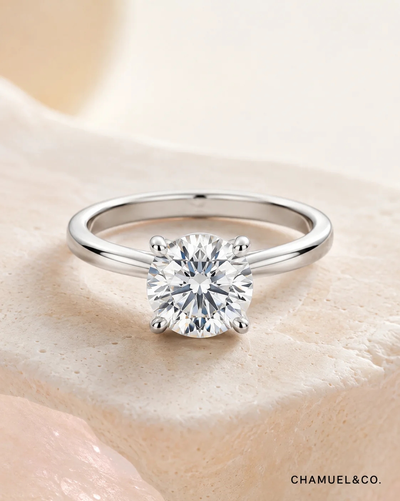
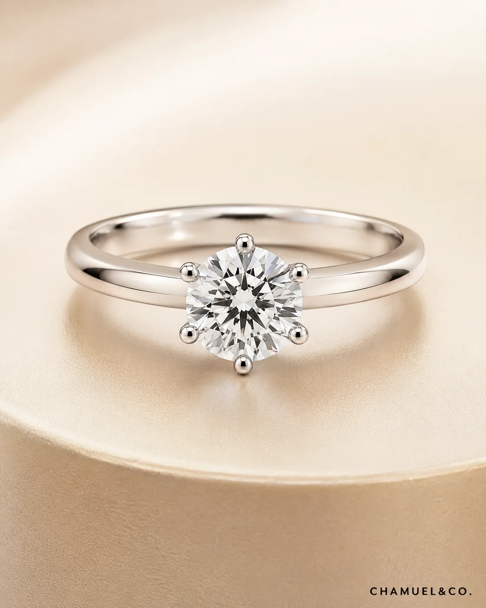

Round
Classic
Balanced timeless and the most familiar brilliant shape
Jewelry looks similar from far away, but stone type, shape, setting and material can change the meaning, durability and budget very differently. Explore the essentials below before making your choice.
A clear choice starts with understanding the stone, the shape, the setting and the metal.
See the difference between moissanite, lab-grown diamond and natural diamond.
02Each shape creates a different visual feeling on the hand.
03Discover how solitaire, pavé, bezel and other settings change the look.
04Compare silver, white gold and platinum before deciding what suits you best.
They may look close at first glance, but their composition, sparkle, origin and value are different. These visuals help you tell them apart more easily.

Known for stronger rainbow fire and the most budget-friendly direction.

Real diamond composition with classic white sparkle and better size-to-budget flexibility.

Earth-mined, traditional and usually the highest-priced option.
Ideal when you want maximum visual size and sparkle at a lower budget.
Best for customers who want diamond composition and a more flexible proposal budget.
Best for those who value rarity, earth-mined origin and a more traditional diamond story.
Use this guide to understand the real difference before choosing a proposal ring, wedding jewelry or custom piece.

Moissanite is not a diamond. It is made from silicon carbide and is known for stronger rainbow fire. It is usually the most budget-friendly direction when the customer wants a bigger, sparkling look.
Lab-grown diamond has the same pure carbon composition as natural diamond, but it is created in a lab. It gives classic white diamond sparkle with better size-to-budget flexibility.
Natural diamond is pure carbon formed by nature and mined from the earth. It is usually the most expensive direction because customers are paying for origin, rarity and tradition.
Shape changes how large elongated classic or distinctive the centre stone feels on the hand
Balanced timeless and the most familiar brilliant shape

Soft elongated proportions create a graceful finger line

Long clean step cut reflections with a more understated sparkle

Strong square geometry for a clean contemporary direction

Rounded corners bring warmth and a gentle vintage character
A beautiful stone still needs a setting that supports daily wear These close-up references help explain both sides of the decision

Cut proportions and facet arrangement influence how light returns through the stone

The centre stone needs enough support and well positioned prongs for long term wear
A setting affects not just style, but also how secure, practical and easy to maintain the ring will be.
Simple and timeless. It keeps full attention on the centre stone.
Adds extra sparkle along the band for a brighter overall look.
Cleaner and more protected, suitable for a practical daily-wear direction.

Four Prong
Six Prong Hidden Halo
Hidden Halo Bezel
Bezel Cathedral
Cathedral Pavé
PavéMaterial comparison belongs inside Education. Use these guides to understand which metal makes sense before confirming a custom ring or wedding band.
14K is practical for budget control. 18K is the more premium fine-jewelry direction when budget allows.
Read guide → Premium Gold DirectionFor wedding bands and meaningful long-term jewelry, 18K gold usually gives a stronger premium direction.
Read guide → Budget MatcherUse the budget matcher to see whether Silver, 9K, 14K, 18K or premium direction makes more sense.
Check budget →Your metal choice affects price, maintenance and long-term wearing experience.
Affordable and suitable for symbolic gifts or entry-level designs, but requires more maintenance over time.
A popular fine-jewelry choice with an elegant bright-white look and balanced durability.
Premium, naturally white and very durable — ideal for long-term daily wear.
Start with moissanite, lab-grown diamond or natural diamond according to budget and meaning.
Select the shape and setting that best matches the wearer’s style.
Finish with the metal choice, then proceed to quotation and custom production.
We’ll help you narrow down a direction that fits your style, budget and purpose.